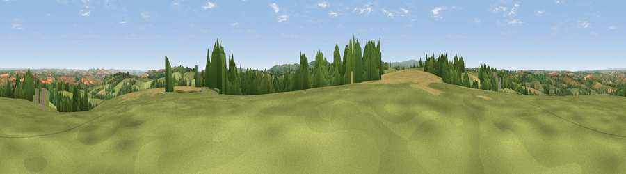

Viewpoint near Yeoford
#11099 in England · top 16% of its area beats it · near YeofordWhere it is
The exact computed spot (SX 77825 96175). Click the marker for map links.
The view, rendered

A 360° render of this exact spot computed from the terrain model, tree cover and land cover — summer colours, afternoon light, calibrated against photographs of famous viewpoints. Real trees, hedges and buildings will differ in detail.
The panorama
Grey silhouette: terrain skyline in each direction (720 bearings, Earth curvature and refraction included). Dashed green: skyline with trees (+15 m) and buildings (+8 m) as obstacles. Blue strip: how far the ground is visible on each bearing.
Where the view opens
Wedge length = distance to the farthest visible ground on that bearing (vegetation-aware). Rings at 10, 25 and 50 km.
What fills the view
63% grassland · 18% cropland · 18% woodland · 1% built-up
Angular shares of the visible panorama (visual magnitude), not map area. Landscape diversity 0.42 (0–1 Shannon).
Key numbers
More beautiful places nearby
The staircase of upgrades: each row has a higher view potential than everything closer. Driving times are estimates from straight-line distance, calibrated against real road routing — check an actual route before setting out.
| Place | Direction | Drive | Score |
|---|---|---|---|
| Crosshill | SW · 2 km | ~5 min | 62.4 |
| Viewpoint near Venny Tedburn | ENE · 3 km | ~8 min | 70.1 |
| Viewpoint near Pathfinder Village | E · 7 km | ~14 min | 71.0 |
| Viewpoint near Moretonhampstead | SSW · 8 km | ~16 min | 74.8 |
| Viewpoint near Moretonhampstead | S · 8 km | ~16 min | 76.3 |
| Viewpoint near Whitestone | E · 9 km | ~18 min | 79.8 |
| Viewpoint near Kenn | SE · 18 km | ~31 min | 80.0 |
| Viewpoint near Haytor Vale | S · 18 km | ~31 min | 80.1 |
50.75228, -3.73330 · source: screening · position refined by local search. Computed location — check access rights before visiting.